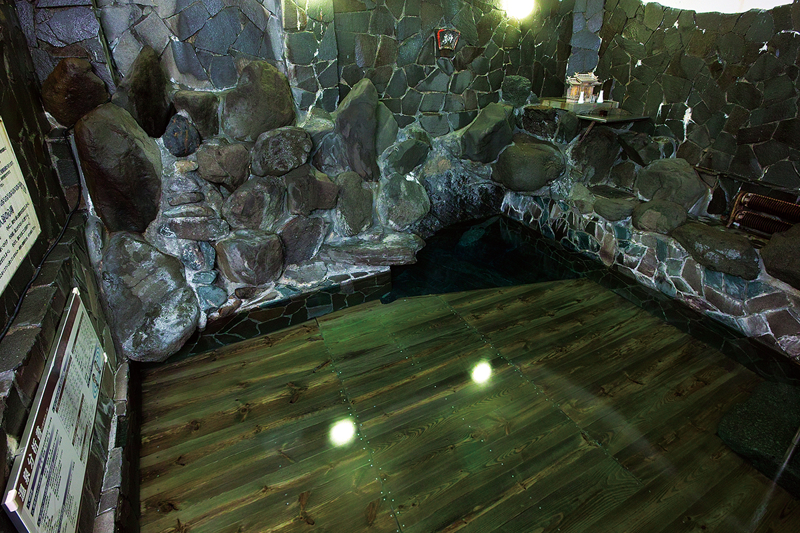
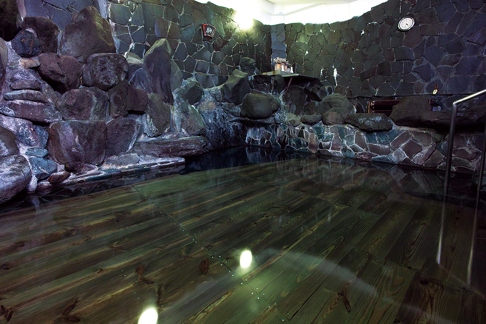
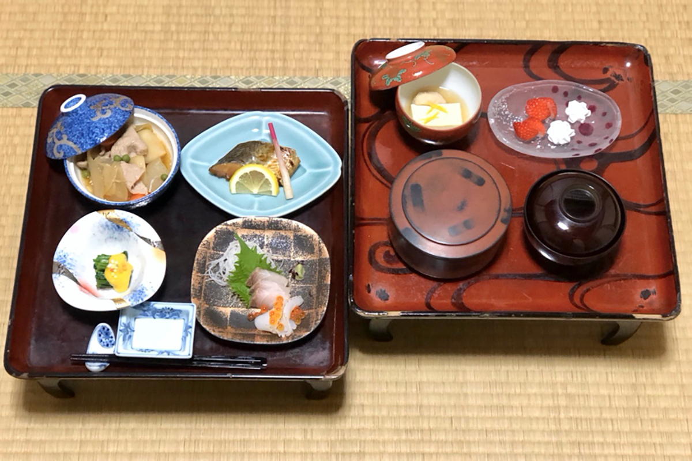
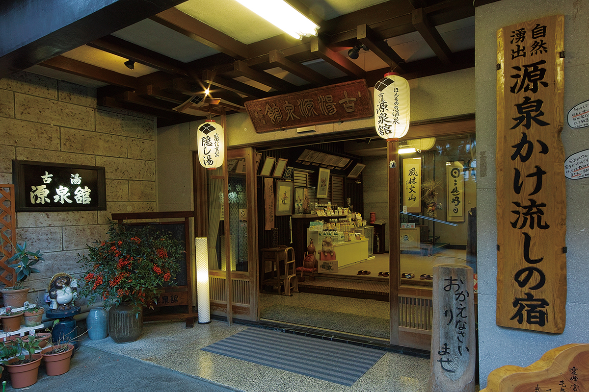
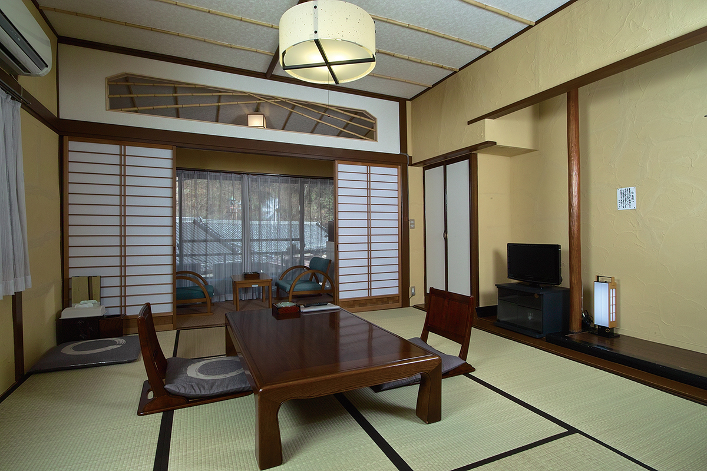

Префектура Яманаси · Симобэ · онсэн
Онсэн Симобэ: источник, где Сингэн Такэда лечил раны

Среди источников, которые в Японии называют «тайными купальнями Сингэна», самый известный находится в Симобэ на юге префектуры Яманаси. Здесь испокон веков лечат раны, а вода поднимается прямо из трещин в скале на дне купальни.
История
Полевой госпиталь полководца
Одни онсэны делают кожу гладкой и молодой, другие помогают желудку и укрепляют иммунитет. Профессор, который больше сорока лет изучает японские источники, выделяет Симобэ за редкое свойство: эта вода издавна лечит раны.
Слава источника связана с Сингэном Такэдой (1521–1573), правителем провинции Каи, на землях которой лежит нынешняя префектура Яманаси. Это один из самых сильных полководцев эпохи междоусобных войн, и многие онсэны региона называют себя его «тайными купальнями». Главным соперником Сингэна был Кэнсин Уэсуги (1530–1578), правитель соседней северной провинции Этиго. По преданию, после их знаменитых сражений при Каванакадзиме сам Сингэн и раненые воины приходили в Симобэ лечиться. Вода источника с давних времён считается особенно действенной при ранах и последствиях операций.
Онсэн стоит в узкой долине, по которой река Симобэ течёт через нетронутый лес. Вдоль неё выстроились чуть больше десятка рёканов, в основном деревянных, в два и три этажа, и атмосфера старого тодзибы, места долгого лечебного купания, здесь сохранилась почти нетронутой.

Купальня
Вода из трещины в скале
Сингэн, как говорят, залечивал раны в одном из старейших рёканов Симобэ, «Коюбо Гэнсэнкан», в купальне, которая так и называется: «Большая каменная купальня Сингэна, его тайный источник». Она размером примерно в пятнадцать татами. Из трещин в скале на дне поднимается слабоминерализованная щелочная вода температурой 30,6 °C, и это не тонкая струйка: в зависимости от сезона от 200 до 400 литров в минуту. Воду никуда не перекачивают, она сразу оказывается в купальне, поэтому свежее не бывает. Источник по праву называют историческим «мэйто». Это слово в Японии означает не просто знаменитый онсэн, а воду, которая лечит болезни.

Купальня общая для мужчин и женщин, хотя есть и часы только для женщин. Поэтому все заходят в воду, обернувшись полотенцем, и соблюдают правила совместного купания. Профессор советует сидеть в тёплой, но не горячей воде источника 15–20 минут, затем минуты три греться в подогретой купальне и повторить так несколько раз. Со временем каждый находит свой ритм.
Постепенно приходит в равновесие вегетативная нервная система, и на душе становится спокойнее. Тело прогревается медленно, до самой глубины, верх берёт парасимпатическая система, отвечающая за отдых, и иммунные клетки начинают работать активнее. По словам профессора, гости часто рассказывают, что после такого купания им легче засыпать и меньше мёрзнут руки и ноги.
По отзыву гостя 2026 года, купаться без ночёвки здесь больше нельзя, так что в каменную купальню попадают только постояльцы рёкана.


«Коюбо Гэнсэнкан»
- Адрес
- префектура Яманаси, посёлок Минобу, Симобэ, 45
- Телефон
- +81 556-36-0101
- Цены / Вход
- от 10 450 иен за ночь с ужином и завтраком (с налогом и сервисным сбором)
- Заезд / выезд
- 14:00 / 11:00
- Номера
- кухни и прачечной нет, Wi-Fi в части здания